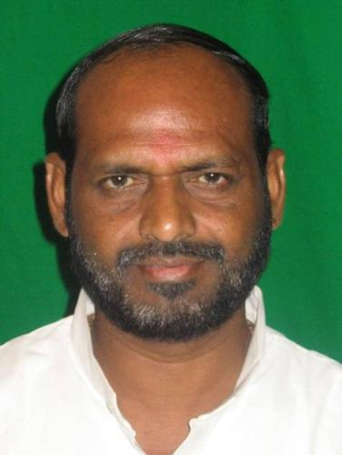
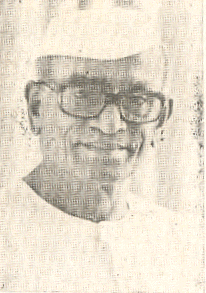
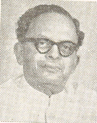
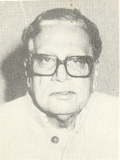
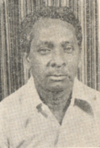
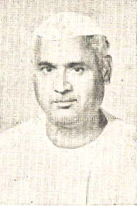
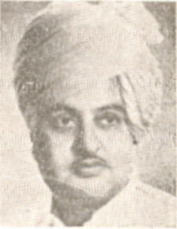

نتیش کمار
مکرر: ۱۹۹۰ - ۲۰۰۴

میں نارائن مینا ہوں۔
مکرر: ۲۰۰۴ - ۲۰۱۴

نتن گڈکری۔
مکرر: ۲۰۱۴ - ونیہ کینس

نریندر سنگھ تومر
مکرر: ۲۰۱۴ - ۲۰۲۱
_(cropped).jpg)
نرملا سیتارمن
مکرر: ۲۰۱۴ - ونیہ کینس

نرنجن جیوتی
مکرر: ۲۰۱۴ - ونیہ کینس

ن. ٹی. شانموگم
مکرر: ۱۹۹۹ - ۲۰۰۴

نارن بھائی راٹھوا
مکرر: ۲۰۰۴ - ۲۰۰۹

نوین پٹنائک
مکرر: ۱۹۹۸ - ۲۰۰۰

ن. ڈی. تیواری۔
مکرر: ۱۹۸۰ - ۱۹۸۸

نندنی ستپاتھی
مکرر: ۱۹۶۶ - ۱۹۷۲

نہار رنجن لشکر
مکرر: ۱۹۸۰ - ۱۹۸۵

نیلم سنجیوا ریڈی
مکرر: ۱۹۶۴ - ۱۹۶۷

نتیا نند کاننگو
مکرر: ۱۹۵۴ - ۱۹۶۶

نہال چند چوہان
مکرر: ۲۰۱۴ - ۲۰۱۶

ناتھورام مردھا
مکرر: ۱۹۷۹ - ۱۹۹۰

انکل ایرنگ
مکرر: ۲۰۱۲ - ۲۰۱۴

نکھل کمار چودھری
مکرر: ۲۰۰۲ - ۲۰۰۳

نیلمانی روٹرے
مکرر: ۱۹۸۹ - ۱۹۹۰
نوال کشور شرما
مکرر: ۱۹۸۴ - ۱۹۸۶

نریندر مودی
مکرر: ۲۰۱۴ - ونیہ کینس

نتیا نند رائے
مکرر: ۲۰۱۹ - ونیہ کینس
نپولین
مکرر: ۲۰۰۹ - ۲۰۱۳

ن. کے. پی. سالو
مکرر: ۱۹۸۲ - ۱۹۹۶

نجمہ ہپت اللہ
مکرر: ۲۰۱۴ - ۲۰۱۶

نرہری پرساد سائی۔
مکرر: ۱۹۷۷ - ۱۹۷۹

ن. وی. ن. پڑھیں
مکرر: ۱۹۹۶ - ۱۹۹۸
ناگمانی۔
مکرر: ۲۰۰۳ - ۲۰۰۴

نرسنگھ یادو
مکرر: ۱۹۷۷ - ۱۹۸۰

نریندر سنگھ مہیدا
مکرر: ۱۹۷۰ - ۱۹۷۱
نسیت پرمانک
مکرر: ۲۰۲۱ - ونیہ کینس

نارائن رانے
مکرر: ۲۰۲۱ - ونیہ کینس

ن. گوپالسوامی آیانگر
مکرر: ۱۹۵۰ - ۱۹۵۲

نرہر وشنو گڈگل
مکرر: ۱۹۴۷ - ۱۹۵۲
نمبوین جینتی بھائی بمبھنیا
مکرر: ونیہ کینس - ونیہ کینس